!
In this tutorial, you will learn how to configure and use the Solace Boomi connector. This is done in 4 easy steps
- Configure your Solace PubSub+ Event Broker (Hardware, Software, SasS)
- Setup your Boomi AtomSphere
- Create a (very) basic event-driven architecture in Solace Event Portal
- Configure the Solace connector in the Boomi AtomSphere
- Send/Receive messages between Boomi and Solace
Prerequisite
This tutorial assumes:
- Users on MacOS/Linux have knowledge using Docker
- Access to a Solace broker (explained in Step 2)
- Access to a Boomi environment (explained in Step 3)
Access to a Solace messaging service, Solace PubSub+, can be achieved in either one of the three flavours
- Hardware Appliance
- Software broker image (Docker, Virtual image)
- Solace Cloud service instance
This tutorial will walk you through setting up a Solace Cloud service instance, which also gives you access to the Event Portal. If you are interested in setting up a local broker running on Docker or a virtual machine check out the PubSub+ Event Broker: Software documentation
Sign up for free Solace Cloud account
Navigate to the Create a New Account page and fill out the required information. No credit card required!
Create a messaging service
After you create your Solace Cloud account and sign in to the Solace Cloud Console, you'll be routed to the event mesh page.

Click on ‘Messaging Services' and all the messaging services associated with your account will show up if you have any already created. To create a new service, click either button as depicted in the image below:

Fill out all the details for your messaging service, and then click "Create" at the bottom of the page.

Your service should be ready to use in a couple seconds! 🌪
Core concepts
Boomi builds, deploys and manage all the processes in a concept called Atoms, which is a lightweight Java application that is deployed on a host with Internet access. Think of it as your single-tenant, single-node runtime engine. There are two deployment models for Atoms:
- In-the-cloud deployment (using Boomi Atom Cloud)
- On-premise deployment (using local Atom setup)

4 Steps to get started with Boomi
1. Create a Boomi trial account
if you dont have an account, navigate to https://boomi.com/form/trial/ and sign up for a free account.
After you sign up for a Boomi platform account and login, you will have access to the Boomi AtomSphere - your one stop shop for all your integrations 🤓

You will see the menu at the top

- Build: This is where you design and package your process (i.e. architecture)
- Deploy: This is where you deploy the packaged process in your Atom for execution
- Manage: This is where you configure your environment and Atoms
2. Configure and deploy your local Atom
In this tutorial, we will be setting up a local Atom.
You can either navigate to the links below for more information or follow the steps after
👉 Navigate to the Manage tab and click on Atom Management
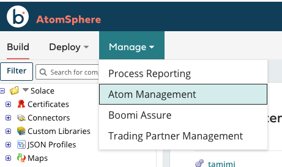
👉 Click on +New and choose Atom

👉 Choose the operating system of choice in the Atom Setup box

📝 Notes on Docker installation
The installer is a shell script that you run locally and automatically configure your docker setup
./atomdocker_install64.sh -hfor more information on how to run it- You can generate a token by clicking on Generate Token under Security Options
- Create a
/var/boomidirectory because the script assumes it already exists and make sure its owned by the current user- Navigate to
/var/boomi/after you create it - Execute the following from terminal
chown $USER . - Make sure this directory is shared on docker. This is done by opening the docker preferences and adding it under File Sharing Resources tab
- Navigate to
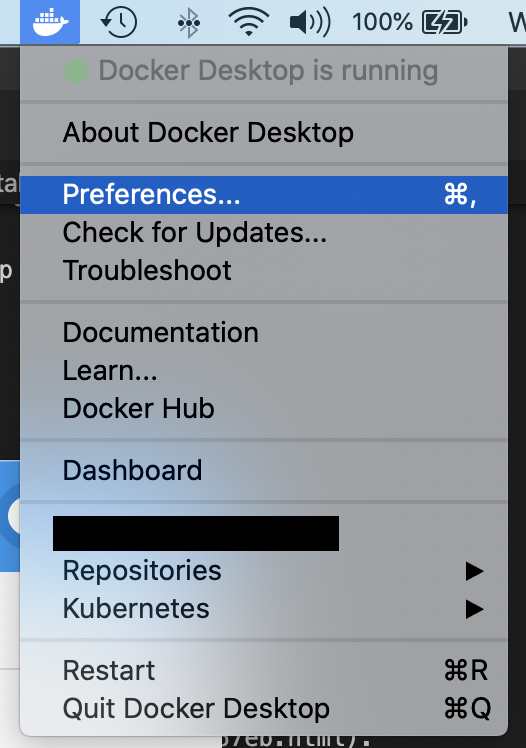
🏃♂️ Run the atom
Execute the atom docker installation shell script as follows./atomdocker_install64.sh -n <name_of_atom> -k <insert_token>
At this point, you can confirm that the Atom has been created and linked to your AtomSphere when you navigate to the Atom Management in the Manage tab and you will see your newly created atom under the Unattached Atoms section
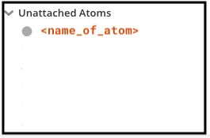
3. Setup Boomi environment
Boomi Environments are synonymous to workspaces thats used for testing or production purposes. You need an environment to "attach" the atom to. You can read more about Boomi Environments on the Environment Management Boomi User Guide
Under the Manage menu, navigate to the Atom management and add a new environment 
Give it a name and choose Test for the environment classification 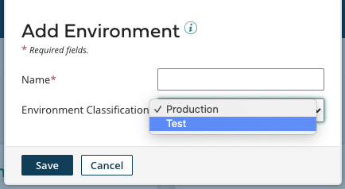
4. Attach the Atom to the environment
Select your newly created environment and search for your atom to attach it 
5. Install the Solace Connector
Click on the Settings > Account information for your account name 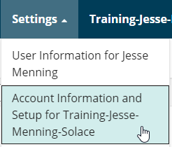
In the left hand column, click on Publisher 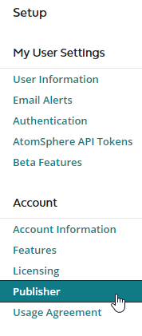 Fill out the required information, making sure to click on the box for "Enable connector SDK development" Click on Save.
Now, click on Developer at the bottom of the left hand column. 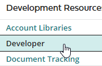
Click on Add Connector Group and name it Solace
Click on Add Connector and use the following properties 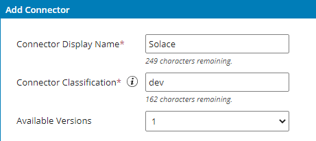
Finally, click on add version, and upload the Connector Descriptor and the Connector Archive file that were provided by Solace
🎉 Viola! Now you have your Solace and Boomi environments setup
Let's assume that you want to collect real-time events from taxis in NYC and stream them over a Solace Broker into your Boomi architecture and applications. These events could represent anything from ride status analytics to payment methods.
Your free trial of Solace comes with the Event Portal, which helps you visualize the structure of event-driven architectures. Your free trial also includes a sample architecture called Acme Rideshare, that we'll use for this lab.
Start it up by going to the "Designer" icon in the left hand column 
Then double click on the Acme Rideshare domain 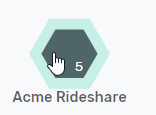
There's a lot going on, but we'll just focus on the Passenger App sending a RideRequested Event to the Driver Management Application. 
For our purposes:
- Passenger App will just be a mock event publisher
- Ride Requested will be an event containing a JSON representation of an ride request
- Driver Management will be the world's simplest Boomi flow, which will pick up the ride request and write it to the process log
Double click on the RideRequested event to get more details about the event 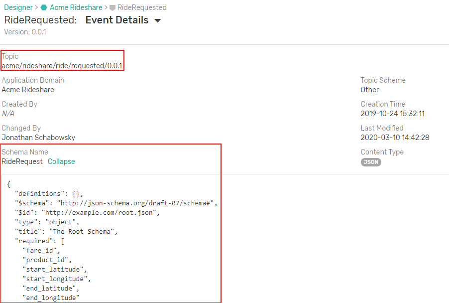 Two things to note here:
- The topic is meta information about the event that lets Boomi flows quickly know if they are interested or not.
- The schema describes the data format, similar to a profile within Boomi
Now back to the Boomi AtomSphere!
1. Create a new Boomi component
👉 Click on the New button to create a new component

👉 Make sure the Type is Process. Give it a name and folder to be saved in

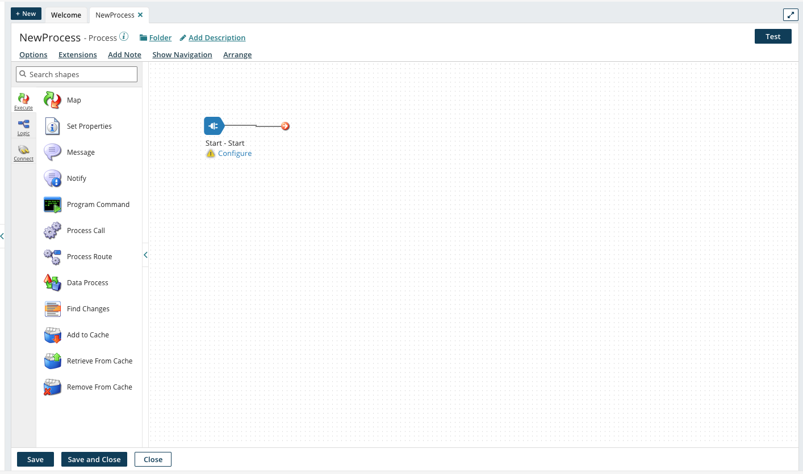
2.. Configure Solace Shape
👉 Hover over the Start shape to configure it
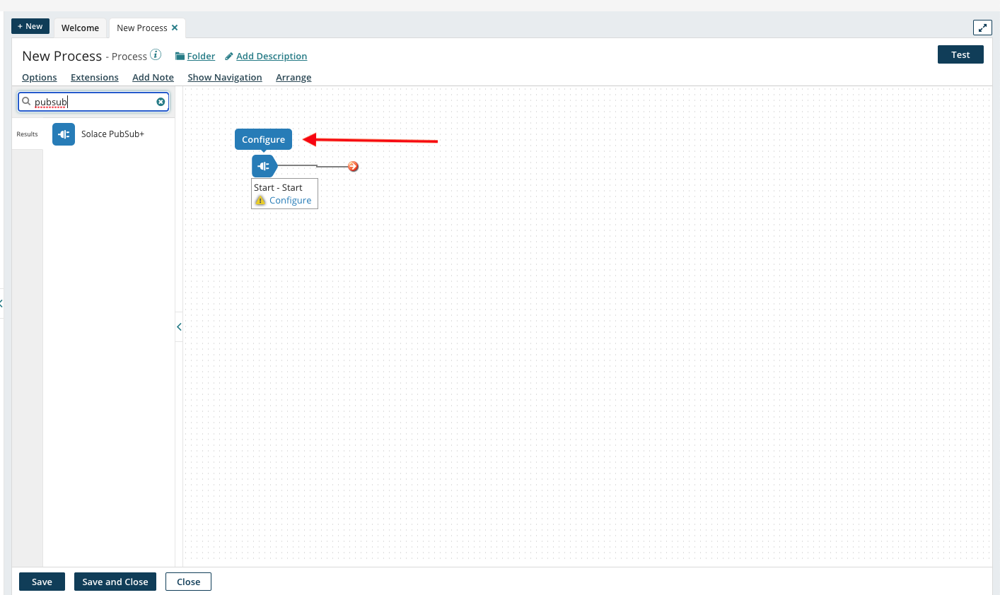
👉 Configure the Start shape to be a Solace PubSub+ Connector with the a Listen action as seen in the screenshot below

A. Configure Connection
👉 In the Connection section, click on the + icon to configure the connection parameters

👉 Fill in the connection parameters with the Host, Message VPN Name, Client Username and Password. This is obtained by navigating back to the Solace Cloud console, clicking on the previously created service and navigating to the Connect tab. Note that you will have to expand the "Solace Messaging" menu to get the connection details 
👉 One more piece of information you'll need is an Event Portal token (this lets you suck in the topic string and schema). In Solace Cloud console, scroll all the way to the bottom of the left column, and click on the account management icon, then select Token Management. 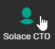
Click on the "Create Token" button in the upper left.
Name the token "Boomi UI access"
Scroll all the way to the bottom of the page and enable the Event Portal Read permission. 
Click on Generate Token
Copy the generated token (make sure to grab it all), and paste it into the Event Portal API Token field in Boomi.
👉 Test the connection, by clicking on the Test Connection button. Note: Choose your Atom here

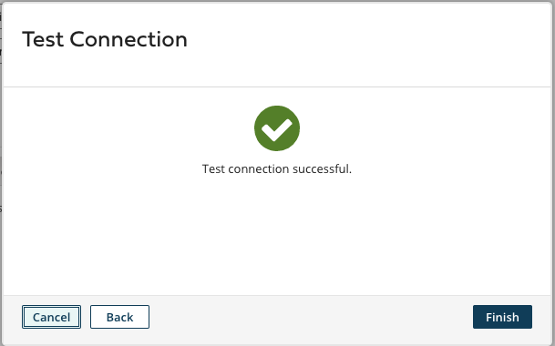
B. Configure Operation
Back to the Start Shape configuration, click on the + icon for the Operation section to configure the operation parameters as seen in the screenshot below
Mode: Persistent TransactedCreate Queue and TS: Selected
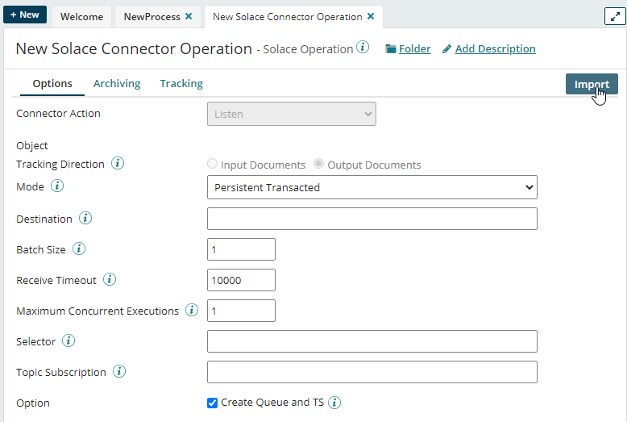
Click on the Import Button in the Upper Left. Select your atom and the Solace connection that you just created, then click on Next.
Boomi grabs the events available to you from the Event Portal, and lists them in a drop down box 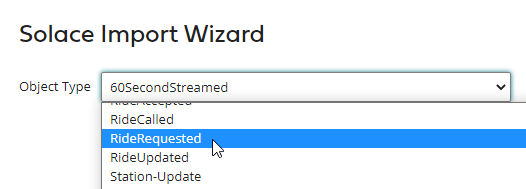
Pick the RideRequested event, click Next, then Finish.
Now check out our Connector Operation: The data format from the Event Portal is now a Boomi Profile (click on the pencil to see more) and the topic string is filled in for us. 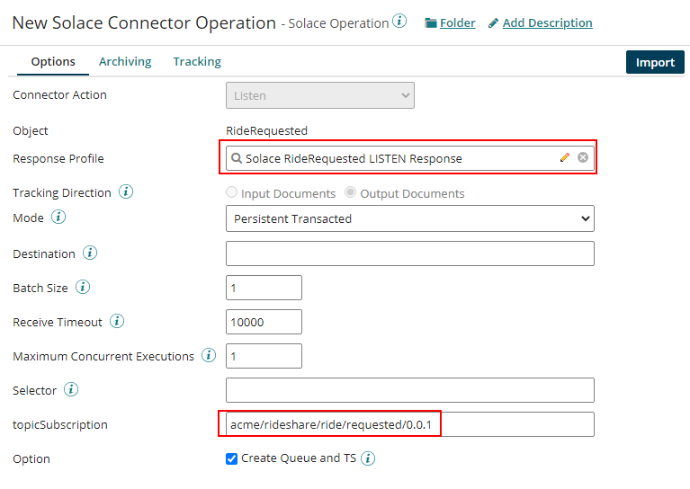 Save and close!
Now your Canvas should look like this with the newly added shape
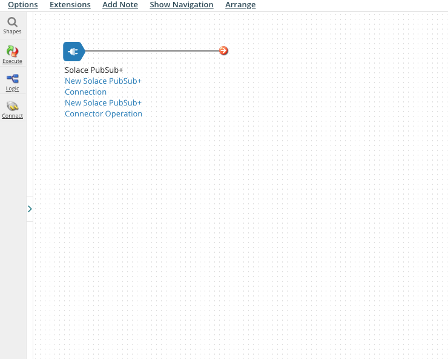
3. Add a Notify shape
In order to test out the end to end connection and make sure that the events sent from the Solace PubSub+ broker are being received by the Solace Boomi Connector, we want to add a way to log the events received. To do so, lets go ahead and add a Notify shape
👉 Search for and drag the notify shape into the canvas
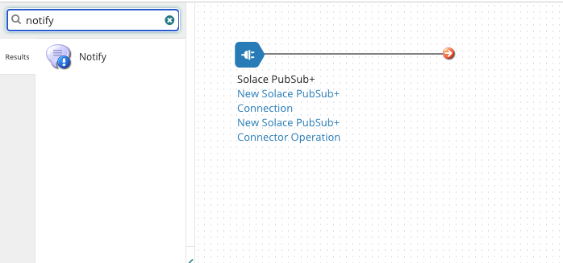
👉 Configure the Notify shape to log the payload received from the message sent

Note that {1} in the Boomi context means variables. Click on the + icon to add a new variable and choose the type to be Current Data

4. Connect the Solace PubSub+ Listener to the Notify Shape


Save the process flow!
To connect everything together, we will need to package the newly created process flow and deploy it on the locally running Atom
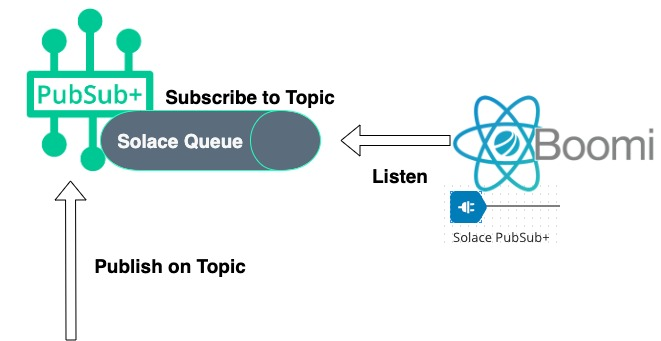
Package and Deploy the Process
👉 Click on the Create Package button

👉 The newly created component will be automatically selected by default
👉 Click Next to add details. No need to add any more details
👉 Click create package and you will see this notification

Deploy the packaged process on the running atom
👉 Click on the Deploy button and choose the Environment that you created previously
👉 Click Next until you get to the Review Deploy step
👉 Click on the Deploy button!

Publish events 💥!
👉 Navigate back to your Solace Cloud console, select the messaging service and navigate to the Try Me! tab

👉 In the Publisher section, click on the Connect button, change the topic to be acme/rideshare/ride/requested/0.0.1 (since we have our queue subscribing to this topic, remember!) and update the message body to whatever you want

👉 Smash that Publish button.
Check out the logs
👉 From the Boomi AtomSphere, navigate to the Process Reporting section under the Manage tab
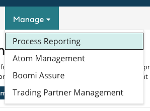
You will see the process reporting menu with your newly created NewProcess process. Note that you can click on the refresh icon 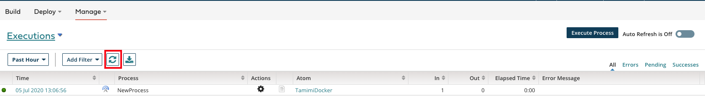
👉 Click on the view process logs icon
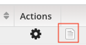 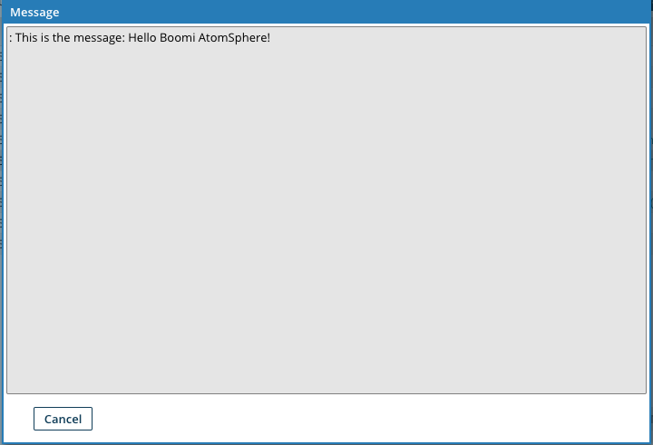
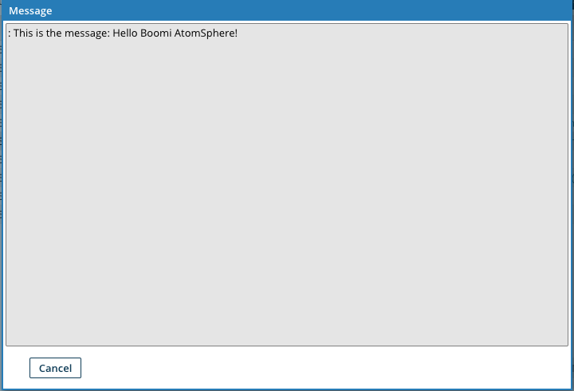
You're done!
✅ Sign up for a Solace PubSub+ Cloud account and configure a messaging service broker with a queue
✅ Sign up for a Boomi AtomSphere account and setup a Solace Pubsub+ Connector for a listen configuration and bind to a message queue
✅ Send events to the same topic the queue is subscribed to

Thanks for participating in this codelab! Let us know what you thought in the Solace Community Forum!